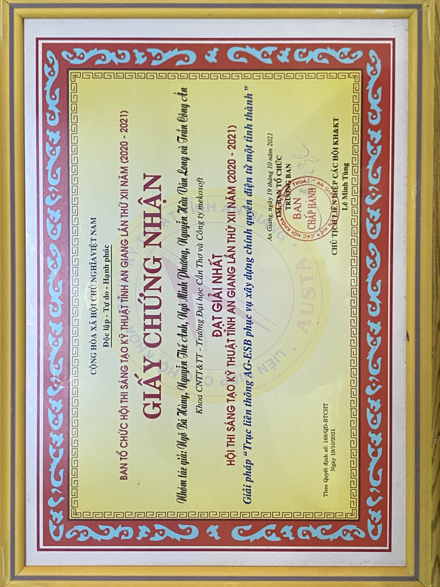
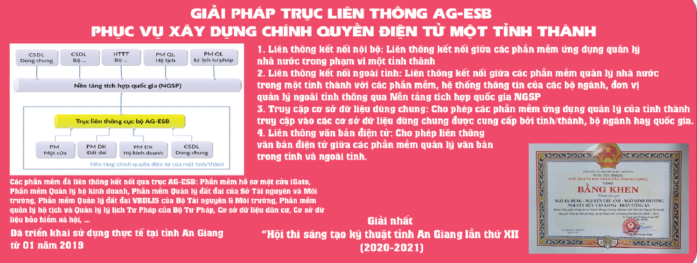
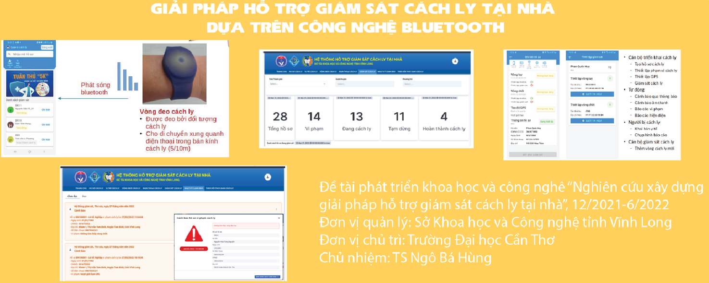
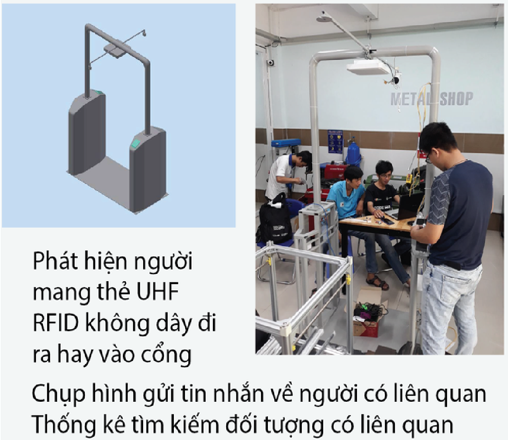
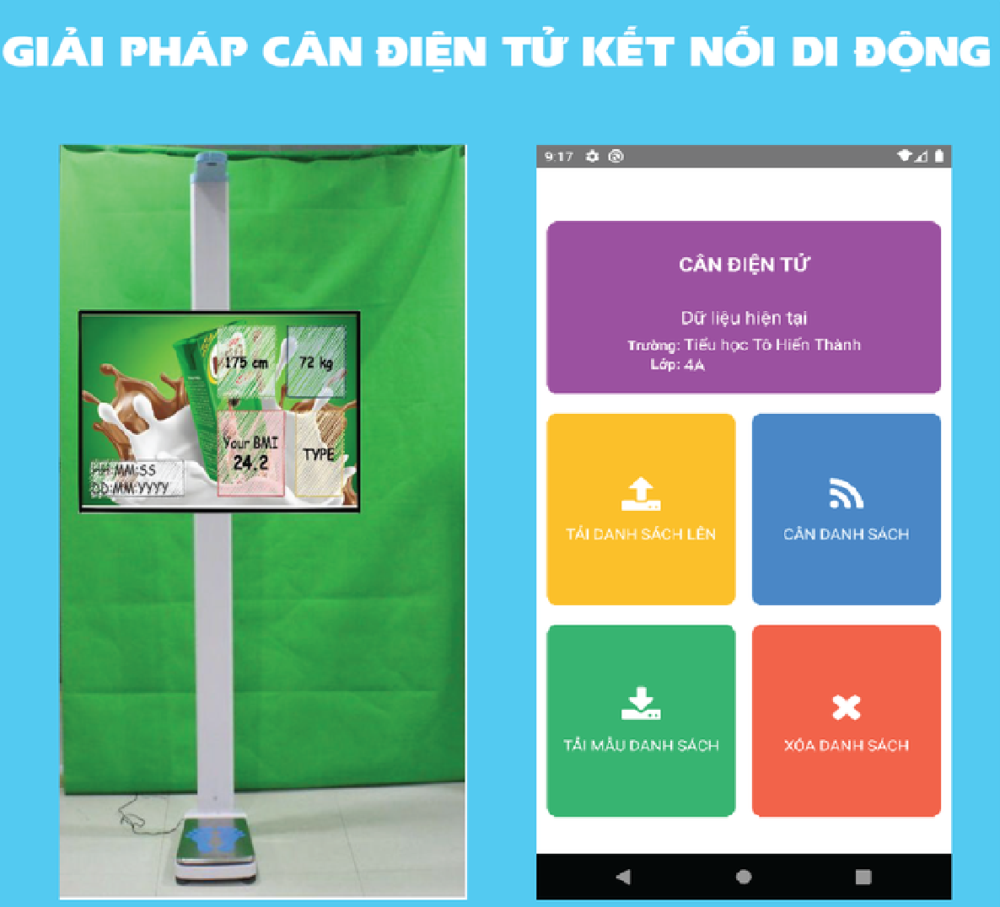
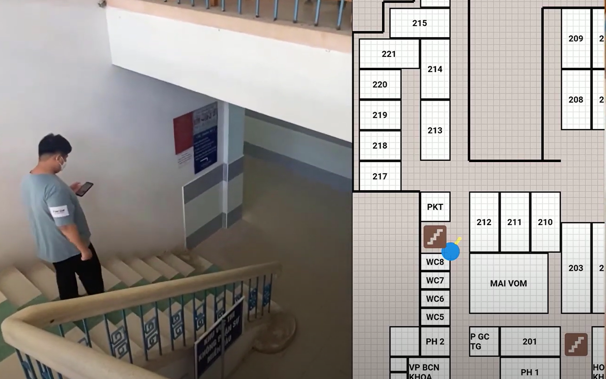

Faculty of Computer Networks and Communications
Our members are actively involved in scientific research with significant sources of research funding both on and off campus. We have experience in participating, consulting, and managing scientific research projects at different levels, many of which have been applied in practice. Moreover, the Faculty members and students contribute to scientific research through publishing books, book chapters, as well as articles/reports published in prestigious journals and conferences with ISI/Scopus indexing or belonging to the list of articles scoring by the State Council for Professor Title.
Areas of study
- Computer Networks, Free and Open Source Software (Team Leader: PhD. Senior Lecturer Ngo Ba Hung)
- Information security, Network security (Team Leader: PhD. Tran Thi To Quyen)
- Big data, High performance computing, Cloud computing (Team Leader: PhD. Senior Lecturer Phan Thuong Cang)
- Data Science, Machine Learning, Robotics, Internet of Things (Team Leader: Assoc. Prof. Do Thanh Nghi)
Published researches scientifiques
Published textbooks

Published textbooks - CNC
- Assoc. Dr. Do Thanh Nghi, Assoc. Dr. Pham Nguyen Khang, Dr. Pham The Phi, “Python Programming”, Textbook of Faculty of Information and Communication Technology, CTU, 2019.
- Dr. Phan Thuong Cang, Dr. Ngo Ba Hung, Dr. Tran Thi To Quyen. "Service Oriented Application Development". CTU, 2019.
- Dr. Tran Cong An, MSc. Nguyen Huu Van Long. "J2EE Technology". CTU, 2019.
- Dr. Tran Cong An, MSc. Nguyen Cong Huy. "Object Oriented Programming". CTU, 2016.
- Dr. Ngo Ba Hung, MSc. Doan Hoa Minh. "Mobile Devices Programming". CTU, 2016.
- Assoc. Dr. Do Thanh Nghi, Dr. Tran Cong An, Dr. Phan Thuong Cang, Dr. Lam Chi Nguyen. "Web Programming". CTU, 2015.
- Assoc. Dr. Pham Nguyen Khang, Assoc. Dr. Do Thanh Nghi, "Computer Graphics", CTU, 2015.
- Assoc. Dr. Do Thanh Nghi, Dr. Nguyen Van Hoa, Dr. Do Hiep Thuan, "Parallel Programming". CTU, 2014.
- Dr. Ngo Ba Hung, MSc. Nguyen Phu Truong, "Distributed Systems". CTU, 2012.
- Assoc. Dr. Do Thanh Nghi, Dr. Pham Nguyen Khang, "Machine learning", CTU, 2012.
- Assoc. Dr. Do Thanh Nghi, Dr. Le Thanh Van, "Knowledge systems and data mining", CTU, 2012.
- Assoc. Dr. Do Thanh Nghi, Assoc. Dr. Pham Nguyen Khang, "Linux and open source software", CTU, 2012.
- Assoc. Dr. Do Thanh Nghi, “Data Mining: Illustrated in R language”, CTU, 2011.
- MSc. Pham Huu Tai. "Network Troubleshooting". Faculty of Information and Communication Technology, 2010.
- Dr. Ngo Ba Hung, " Network Design & Installation", CTU, 2003.
- Dr. Ngo Ba Hung, MSc. Nguyen Cong Huy. "Communication Programming". CTU, 2000.
Science research and technology transfer projects
- Detection of the key courses affecting the learning outcomes of information technology students
- Research on building an intelligent system for automated answering the questions related to administrative procedures
- Optimizing Recursive Join on large datasets in MapReduce environment with Spark (2016)
- AG-ESB interconnection solution for building e-government in a province, 2020-2021
- Solution to support home isolation monitoring based on Bluetooth technology, 2021-2022
- Touch-less attendance gate solution based on UFH RFID technology
- Electronic weighting solution with mobile connection
- Indoor navigation application based on low energy Bluetooth technology (BLE Indoor navigation)




